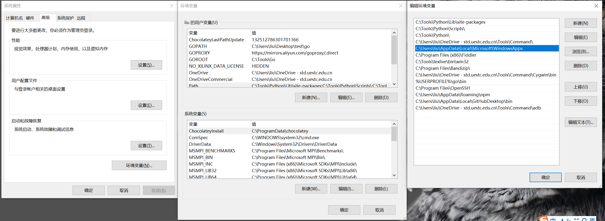

添加到 PATH
添加到 PATH 后，在 cmd 或者 VS Code 敲 wt 就能打开 Windows Terminal。
添加的方法就不多说了，看图。

添加到 PATH
右键菜单“Windows Terminal Here”
最近的新版本 Windows Terminal 也有一个 Open in Windows Terminal，但不是很好用：使用 Open in Windows Terminal 的窗口是在自己的路径的，但在这个窗口新起的标签页就又变成了 C:\Windows\System32。希望之后能修复这个 bug，目前可以用下面这个方法解决。
将以下文本粘贴到一个空 txt 后，改为 reg 格式。然后双击导入注册表即可。
1 | Windows Registry Editor Version 5.00 |
注：还需要配置启动目录为
null，见配置文件。

效果
配置文件
我的 Windows Terminal (v1.8.1521) 配置文件因为太长，故以文件形式放出。